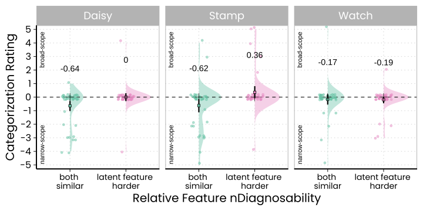
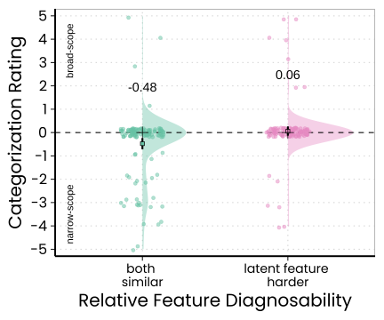
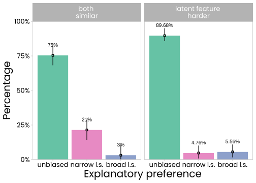

To see a demo of the experiment in a separate browser window, click here.
To download the program files of the experiment, click here.
The data set contains the following columns:
This study (\(N~= 252\)) replicated the findings of Experiment~1b with three additional (fictitious) test scenarios. Two versions of each scenario were tested. In one, both category features had about equal diagnosability. In the other, the status of the latent feature was harder to determine than that of the evident feature. The goal was to demonstrate that the findings of Experiment~1b that document an influence of relative feature diagnosability generalize to other scenarios. One scenario was about a newly discovered species of desert plant (the Desert Daisy). Two sub-types were described (Type A and Type B), that were described to occur equally frequent. Both sub-types shared the feature “pearly white blossom”. The second feature varied between conditions. In the condition in which both features had similar diagnosability, the unique feature (the latent feature in the test case) was “thick green leaves”. In the condition in which the latent feature was harder to observe, it was “venomous liquid in its stem”. The structure of all three different scenarios was identical. The second scenario was about a rare stamp (the “Queen of the Caribbean”). The feature pairs in the condition with similar diagnosability were “ultramarine” (evident feature in the test case) and “yellow margin” (latent feature in the test case). In the other condition the latent feature was “yellow sticky back”. The third scenario was about Swiss watch (the “Weissentanner”). The shared feature in both diagnosability conditions was “little Swiss flag on the dial”. The latent features were “red digits” (similar visibility condition) vs. “red battery cover on its back” (condition where latent feature is harder to see). In the test phase, for all scenarios an exemplar was described in which the information about the latent feature read “you don’t know whether it also has [the unique feature] or not”. Subjects then rated to which category the exemplar most likely belongs to.
Two hundred and fifty-two subjects (\(M_{age}\,= 39\), \(SD_{age}\,= 13.65\), age range 18 to 74 years) recruited via the online platform participated in this online study and provided valid data. The inclusion criteria were a minimum age of 18 years, English as first language, and an approval rate (concerning subjects’ participation in online studies hosted via prolific) of 90 percent. To ensure that all participants are able to understand the written instructions, prolific workers with “no formal qualifications” for the criterion “highest education level completed” were excluded from participation. Subjects also were asked to take part via PC or Laptop, and not via Tablet or Smartphone.
The study was planned for precision. The stopping rule for data collection was that no 95% CI of the group means for the three scenarios should be wider than 1.0. There should also be equally many subjects in each conditions. This criterion was reached after 42 subjects per condition.
The study had two main factors, which were manipulated between subjects. One was relative feature diagnosability, which had two levels (both features similar vs. latent feature harder to diagnose). The other factor was the scenario, which had three levels (Flower vs. Stamp vs. Watch). An additional counterbalancing factor was the orientation of the rating scale shown in the test phase (narrow scope explanation on left side vs. right side). This led to a total of 12 between-subjects conditions. The procedure was largely identical to the procedure of Experiment~1b. Readers may use the link to the demo of the study.
The different scenario descriptions in the different “relative feature diagnosability” conditions were (with the features in the condition in which the latent feature was harder to diagnose in []):
Desert Daisy:
In the desert region of Al Amanur between China and Mongolia, botanists recently discovered a new kind of plant, the Desert Daisy. There are two subtypes of the Desert Daisy, Type A and Type B. Both occur equally often. Desert Daisy Type A has a pearly white blossom. Desert Daisy Type B also has a pearly white blossom, but unlike Desert Daisy Type A, it also has thick green leaves [it also has a venomous liquid in its stem].
You’re on a trip through Al Amanur desert and come across a Desert Daisy that has a pearly white blossom, but you don’t know whether it also has thick green leaves [the venomous liquid in its stem] or not.
Queen of the Caribbean:
In the world of stamp collectors, the holy grail for any collector is a stamp called “Queen of the Caribbean”. There are two subtypes of this stamp, Type A and Type B. Both occur equally often. Queen of the Caribbean Type A is ultramarine. Queen of the Caribbean Type B also is ultramarine, but unlike Queen of the Caribbean Type A, it also has a yellow margin [sticky backside that is yellow].
You’re on a flea market and come across an old postcard with a Queen of the Caribbean on it. The stamp is ultramarine, but you don’t know whether it also has a yellow margin [a yellow sticky back].
Weissentanner:
In the valley of Weissentann in Switzerland a watch manufacturer produces a kind of watch that is the dream of any watch lover. It’s called the “Weissentanner”. There are two subtypes of the Weissentanner, Type A and Type B. Both are produced in equal numbers and are equally expensive, which is why both types are found equally often. Weissentanner Type A has a little Swiss flag on its dial. Weissentanner Type B also has a little Swiss flag on its dial, but unlike Weissentanner Type A, it also has red digits [a red battery cover on its back].
You’re on a train through the valley of Weissentann and you realize that the person sitting next to you is wearing a Weissentanner. The watch has the little Swiss flag on its dial but you don’t know whether it also has red digits [a red battery cover on its back].
In each scenario, subjects answered the following test question:
To which category of [Desert Daisy; Queen of the Caribbean; Weissentanner] do you think this [flower; stamp; watch] belongs to?
Subjects provided their ratings on an eleven-point rating scale with the endpoint labeled “Definitely Type A”, the midpoint labeled “50:50 (both equally likely)” and the other endpoint labeled “Definitely Type B”. The orientation of the scale was counterbalanced between subjects.
Subjects also provided brief open-ended explanations of their ratings. They then were asked two memory check questions and only the data of subjects who responded correctly to both question were recorded for analyses. The memory check probed the defining features of the two types of entities presented in the scenario (run Demo of the experiment to see the memory checks. To run the demo, click here).
Subjects provide demographic information, were given the chance to report technical complications they may have experienced, and then ended the study on a short debriefing screen.
A figure that shows subjects ratings in the three different scenarios is shown below (squares are means, “+” are medians, error bars are 95% CIs of the means, jittered dots show subjects’ ratings and violin plots their distributions):

Subjects tended to prefer the narrow latent scope explanation if both features had similar diagnosability (although there was no difference in the watch scenario). Averaging over the scenarios, the following graph shows the difference between these two theoretically relevant conditions (squares are means, “+” are medians, error bars are 95% CIs of the means, jittered dots show subjects’ ratings and violin plots their distributions):

All statistical parameters and tests can be found in the knitted R-Markdown Analysis file, which can be accessed here. The analysis revealed that the means in these two conditions were different from each other, which corroborates the hypothesis that relative feature diagnosability influences subjects’ preferences.
The graphs also show that narrow latent scope biases were exhibited only by a subgroup of subjects. A graph showing the different categories of subject responses (and their proportions) is shown below:

All in all the results of this additional study complement the findings of Experiment~1b and lead to the conclusion that past studies who tested features with similar relative feature diagnosability tended to overestimate genuine narrow latent scope biases. The reason is that under conditions of similar relative feature diagnosability, subjects’ preference for the narrow latent scope explanation may be pragmatically warranted: observing one feature but not knowing the status of another that should be as easy to see is more likely to happen in a world in which that latent feature is actually absent.
2023 ANONYMIZED AUTHOR.